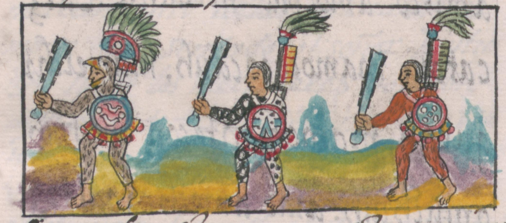

Aztec Weapons
Melee
Mācuahuitl

The Mācuahuitl was a weapon similar in shape to a cricket bat, but along the sides shards of obsidian, sharper than modern day razors, imbedded in the side of the club.
This makes a weapon similar in concept to a sword, hence why this is commonly called an Aztec “Sword”.
There were one handed and two handed variants of this weapon.
There were even reports from the Spanish that this sword could cut the head of a horse off in one swing, this however is left up to debate.
A drawing of the last known surviving Mācuahuitl before it was destroyed by a fire in 1884.
Tepoztopilli

The Tepoztopilli is a pole-arm weapon similar to a spear. It was used for stabbing and slashing.
It’s very similar in construction to a Mācuahuitl, having obsidian shards stuck in at the tip.
Tepoztopilli were usually around 3 – 7 feet long and were the most common weapon seen on the battle field.
Quauholōlli
The Quauholōlli was a simple weapon, consisting of a club with a ball made of wood, stone or copper at the end designed for bludgeoning.
Cuahuitl
The Cuahuitl was a simple baton made from wood. See above on the right.
Tlāximaltepōztli
The Tlāximaltepōztli was basically an axe. It was made with a stone or bronze head, and was used as both a tool and a weapon.
Tecpatl
The Tecpatl was a knife or dagger that was mainly used for human sacrifice,
however the Jaguar Warriors would carry them a backup weapon. It was made out of flint or obsidian.
Ranged
Tlahhuītōlli
The Tlahhuītōlli was a bow made by the Aztecs. It was a self bow (a self bow is a bow made from a single piece of wood) made from the tepozan tree and was usually about 5 feet long.
Micomitl – Quiver for arrows
Yaomitl – Arrows, usually with obsidian or flint heads.
Ahtlatl
The Ahtlatl is a unique weapon, to put it simply, it’s a stick that you use to throw spears.
You place the dart against the groove and using leverage you can throw a spear almost twice as far.
Tlacochtli – Darts/spears made specifically for the Ahtlatl
Tēmātlatl
The Tēmātlatl is a sling made from maguey fibers. It was used to hurl rocks and obsidian shards towards their enemies.
Tlacalhuazcuahuitl
The Tlacalhuazcuahuitl is a blowgun used to shoot poison typed darts. The poison was made from the extremely potent poison of the poison darts frogs